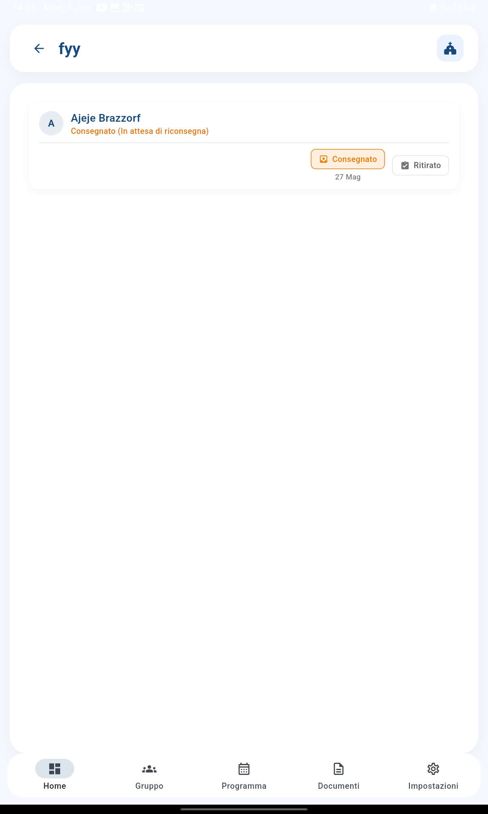

Non perdere più traccia di moduli e autorizzazioni: sapere sempre chi ha consegnato e chi deve ancora restituire
Quante volte distribuisci un modulo e poi non ricordi a chi l'hai dato o chi te l'ha restituito? La Gestione Documenti di CatechHub ti permette di tracciare l'intero ciclo di vita dei moduli cartacei: dalla creazione, alla consegna alle famiglie, fino alla riconsegna e all'archiviazione.
Definisci un nuovo modulo: titolo (es. "Autorizzazione gita autunnale"), descrizione, data di scadenza. Puoi anche allegare un file PDF o un'immagine del modulo originale.
Registri a quali ragazzi hai consegnato il modulo cartaceo. Con un tap segni che Mario Rossi ha ricevuto il modulo il giorno X.
Quando un ragazzo riporta il modulo firmato, registri la riconsegna. Puoi anche segnare chi è esonerato (per esempio, se il modulo non si applica a quel ragazzo).
Quando tutti hanno completato il ciclo, puoi archiviare il documento. Resta nel database ma non intasa la vista principale.


Per ogni documento puoi vedere subito quante consegne hai fatto, quante riconsegne hai ricevuto, quanti sono in ritardo e la percentuale di completamento. Niente più foglietti volanti o promemoria mentali.